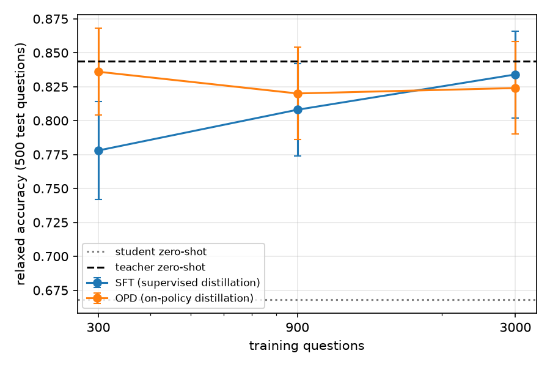
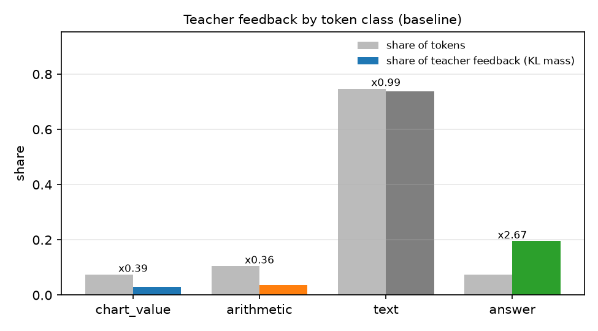
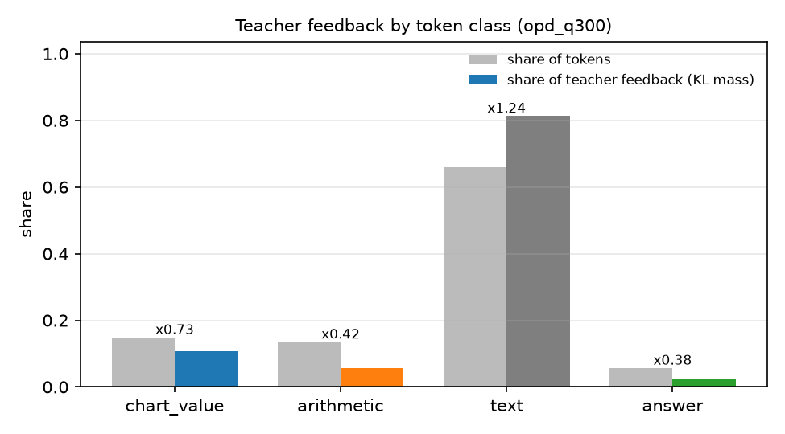

Independent research project · Sept 2026
On-policy distillation for vision-language reasoning
A 2B vision-language model trained with on-policy distillation on 300 chart questions matches supervised distillation trained on 3,000, and a token-level analysis shows the teacher's feedback lands on answers and format before it lands on what the model reads off the chart.
Supervised distillation is behavior cloning, and behavior cloning compounds its errors
Fine-tuning a student on teacher outputs only ever shows it the states the teacher visited. At inference the student drifts, enters states it never trained on, and its mistakes compound: regret grows quadratically in the sequence length, O(T²ε). Long chain-of-thought reasoning has a large T, so this is exactly where the problem bites.
DAgger's fix is to let the student act, then ask the expert what it should have done in the states the student actually reached, which brings regret down to O(Tε). A teacher language model can be queried this way for free: the student samples a solution, the teacher scores every generated token, and training minimizes the per-token KL between the two. That is on-policy distillation (OPD).
OPD only touches the distribution over text tokens. For a vision-language model the image is just part of the prefix, so the method should transfer directly. This project checks whether it does, whether the data-efficiency claim survives, and, since the prefix now contains a chart, where the teacher's token-level feedback actually lands.
One student, one teacher, one GPU
Both models share the tokenizer, so the KL is computed token by token over the full vocabulary. The vision tower and projector stay frozen; a rank-64 LoRA on the language-model projections holds 69.7M trainable parameters (3.17%). Images are capped at 768 px on the longer side, which keeps them between 300 and 600 visual tokens and keeps teacher, student, optimizer, and activations under 27 GB.
Scoring is ChartQA relaxed accuracy on a fixed 500-question test set: numeric answers within 5% relative error, text answers exact after normalization, and a missing Answer: line counts as wrong. Every number below carries a percentile bootstrap interval; comparisons between two systems use a paired bootstrap over the same questions.
Why human-written questions only: on a random ChartQA mix (three quarters machine-generated) the 2B student already scores 0.84 zero-shot against 0.90 for a 4B teacher, too little headroom to separate any two methods. Restricting to human questions opens a 17.6-point gap.
OPD reaches full-data SFT accuracy with 10% of the questions
Both methods train on the first N questions of the same sampled train set with the number of optimizer updates held fixed across budgets (302 steps for SFT, 150 steps of 16 rollouts for OPD), so data quantity is the only variable.

| Training questions | SFT | OPD | OPD − SFT, paired 95% CI |
|---|---|---|---|
| 300 (10%) | 0.778 [0.742, 0.814] | 0.836 [0.804, 0.868] | +0.058 [+0.028, +0.088] |
| 900 (30%) | 0.808 [0.774, 0.842] | 0.820 [0.786, 0.854] | +0.012 [−0.016, +0.040] |
| 3,000 (100%) | 0.834 [0.802, 0.866] | 0.824 [0.790, 0.858] | −0.010 [−0.036, +0.016] |
At 300 questions OPD beats SFT by 5.8 points and the paired interval excludes zero. The 300-question OPD student sits within noise of the teacher. Because 300 was the smallest budget tested, the true crossover is at or below 10% of the data.
With enough data, both methods saturate at the teacher
At 900 and 3,000 questions the paired differences are +1.2 and −1.0 points, both inside their intervals. This is the expected shape, not a failure: the full-data SFT student is already within one point of the 8B teacher, so there is nothing left for OPD to add on this task with this teacher. Separating the methods at full data would need a stronger teacher or a harder test set, not more steps.
Two caveats stated plainly. All runs use a single seed. The 3,000-question OPD run covers each question less than once (2,400 rollouts), so it is undertrained relative to SFT's two epochs; the fixed-update design was chosen deliberately, but it favours SFT at the largest budget.
The teacher's feedback lands on the answer line first, not on the digits read off the chart
For 100 test questions the student samples a solution at temperature 1.0, the same regime as training. Teacher and student then score the identical sequence, and every generated token gets a reverse KL. Tokens are sorted into four roles: the final Answer: line, digits and operators on lines with an arithmetic cue, digits elsewhere (values read from the chart), and everything else. The statistic per role is concentration: its share of total KL divided by its share of tokens.


| Token class | Zero-shot: tokens → KL mass | Concentration | After OPD-300 |
|---|---|---|---|
| answer | 7.3% → 19.5% | 2.67× | 0.38× |
| text (connectives, format, words) | 74.8% → 73.9% | 0.99× | 1.24× |
| chart_value | 7.4% → 2.9% | 0.39× | 0.73× |
| arithmetic | 10.5% → 3.7% | 0.36× | 0.42× |
| mean KL per token | 0.489 | 0.235 |
Before training the teacher disagrees most where the student commits to an answer and where it chooses a format; the trained student switches to the teacher's Step 1: layout and the answer-line disagreement almost disappears. Digits get less feedback than their length would predict for two reasons visible in the heatmaps: both models condition on the same image, and numbers are tokenized digit by digit with the disagreement sitting on the first digit, which per-token averaging dilutes. What remains after OPD is mostly perception, not answer selection.
This matches the premise of several 2026 papers that vanilla OPD under-weights visual grounding and propose re-weighting it; the measurement here is an independent, cheaper way of seeing the same thing.


The method transfers; the engineering is where the work is
- Image tokens never enter the loss. A chart becomes 300 to 600 visual tokens in the prompt. The SFT collator and the OPD trainer mask every prompt and image position; only generated text up to and including the end-of-turn token is supervised or scored.
- One image tensor, two models. The processor runs once per batch; teacher and student receive identical pixel tensors and the identical token sequence.
- Resolution is the memory knob. Capping the longer side at 768 px is what makes teacher, student, optimizer and activations fit in 27 GB.
- Left-padded rollouts and
logits_to_keep. Every generation starts at the same index, so both models compute logits only for the generated span: about 1.2 GB per model instead of logits over the image positions too. - Rollout, not scoring, is the cost. Per step at batch 16: rollout 15 to 47 s, teacher forward 1 s, student forward and backward 3.5 s. Decoding is latency-bound, so a larger rollout batch is almost free; batch 16 doubled throughput at the same memory.
- Merged weights for evaluation. The LoRA adapter is merged into the base and pushed as a standalone model, so vLLM evaluation is one code path for every model.
- Disconnect-safe training. Adapter, optimizer, scheduler and data cursor go to the Hub every 25 steps with a pointer file; a real Colab disconnect at step 75 resumed and finished without repeating or skipping a batch.
| Run | Cost on an A100 40 GB |
|---|---|
| Evaluate 500 questions with vLLM | 12 s (2B), 36 s (8B) + ~3 min engine start |
| Sample and verify teacher solutions, 3,000 questions | minutes; 80.1% kept |
| SFT, 302 steps, effective batch 16 | 12 min, 2.3 s/step |
| OPD, 150 steps, batch 16 | ~90 min, 35 s/step, peak 27 GB |
What this does not show
- One task, one model family, one seed. The 5.8-point low-data result has a paired interval that excludes zero, but a multi-seed repeat is the obvious next check.
- Token roles are heuristic (line-level cues and digit detection); the "text" class mixes structural tokens with reasoning words.
- The comparison is against the vanilla OPD objective. Re-weighted variants from 2026 (visual-advantage weighting, gradient steering, Fisher projection) were not run.
- Full-data results are ceiling-limited by an 8B teacher on ChartQA; a stronger teacher would be needed to separate methods at 3,000 questions.
Everything runs from five Colab notebooks
Each notebook is generated from a script in the repository, clones the repo, reads the HuggingFace token from Colab Secrets, and pushes every artifact (sampled data, verified teacher solutions, LoRA checkpoints, merged models, result JSON) to private Hub repos. Nothing lives on Drive or on the Colab disk.
The core is about 1,500 lines of Python with 53 CPU tests, including a full OPD step on a tiny randomly initialised Qwen3-VL and prompt-masking checks against the real processor.
uv venv && source .venv/bin/activate
uv pip install -e ".[dev]"
uv pip install torch torchvision --index-url https://download.pytorch.org/whl/cpu
uv pip install transformers peft
pytest